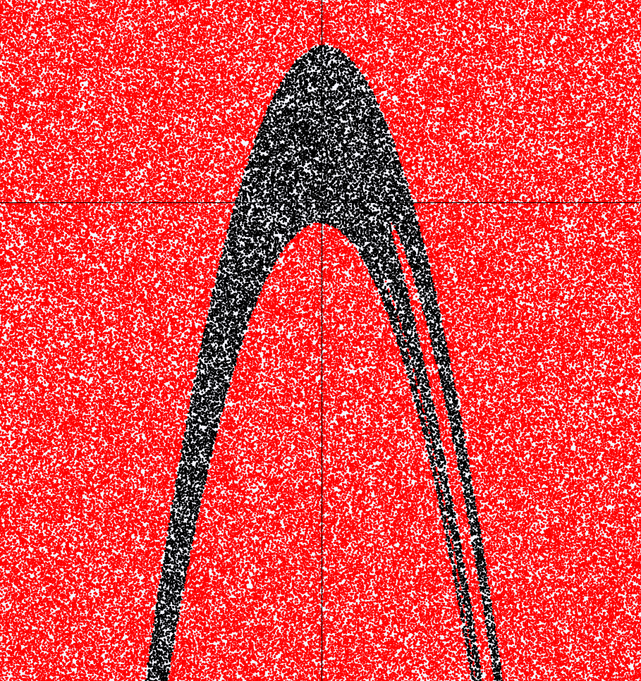
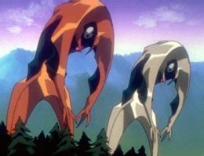

a problem for God. transitions in the laboratory. rotating cylinders and a turning point. David Ruelle's idea for turbulence. loops in phase space. mille-feuilles and sausage. an astronomer's mapping. fireworks or galaxies
.
This is the description of the chapter Strange Attractors
from James Glieck's Chaos. He describes a strange attractor which can be seen in the path generated by the following iterative equations:
\[\displaylines{
x_{i+1} = y_i + 1 - 1.4x_i^2 \\
y_{i+1} = 0.3x_i
}\]
which I have drawn on this page (sorry if you're on mobile). It's called iterative because one point (xi, yi) is used to calculate the next point (xi+1, yi+1). The cursor position is used as the starting point. With the cursor in certain regions, the attractor seems to vanish, as the equations cause points in that region to shoot off the screen rapidly. You can to show a path from point to point, still starting at your cursor - this makes it easier to see the shooting off
, but harder to see the general shape of the attractor.
It isn't strictly the case that moving further from the origin causes the path to diverge. to see the general shape, with the black region representing starting points that converge to the attractor. The shape reminds me of the seventh angel ..
 Both of You, Dance Like You Want to Win! is my favorite Evangelion episode because of the 62 second choreographed fight, which motivates two of the main characters to overcome their differences and learn to move in sync.
Anyway, attractors could be thought of as order
arising from chaos. There is definitely a pattern that emerges, though it is far from obvious how one could predict the boomerang shape given the two equations above. It also kind of looks like a chunk of Saturn's rings.
Chaotic systems are often discovered when looking at phase space as opposed to analysing the direct relationships between variables. That is, if your system has two degrees of freedom, you can plot one along the x-axis and the other along the y-axis; then each point represents a state of the system and you have the system's phase space. One of the most famous examples of this is the Lorenz attractor, which exists in the three dimensional phase space of a simplified weather model and is the origin of the popular idea of the Butterfly Effect.